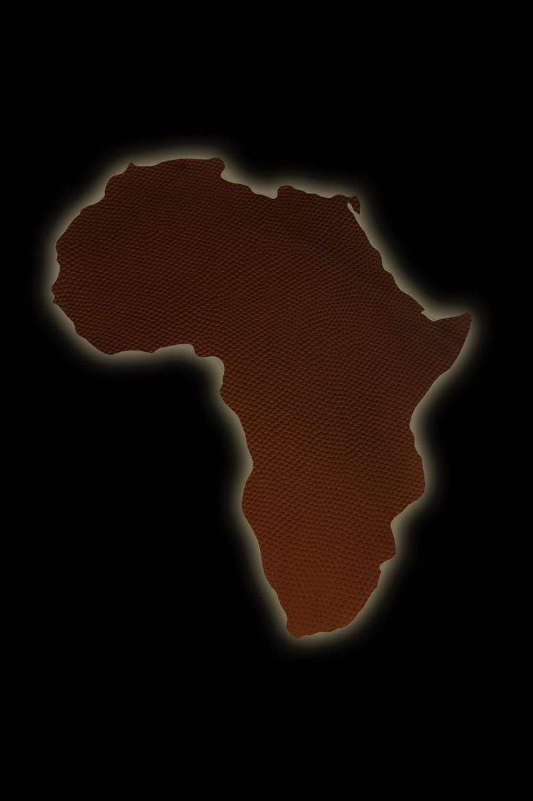

Western Capability, Grounded in Africa
AZAREL Strategic Advisory aligns solutions to real operating conditions on the African continent, from a defined requirement to delivery.
About AZAREL
AZAREL Strategic Advisory is an Africa-focused capability advisory and procurement firm. We work across defense and critical infrastructure, bringing operational, commercially mature, environment-specific delivery to engagements that other firms treat at a distance.
Our approach starts with understanding the client's requirements, constraints, and operational shortfalls. We then align solutions to real operating needs rather than paper specifications, and stay involved from a defined requirement through to delivery.
Two practices. One standard of delivery.
Defense Solutions
Capability advisory and defense-aligned procurement support, planned for the environment and coordinated to real operational need.
Explore Defense → PracticeCritical Infrastructure
Procurement-driven support for critical infrastructure: clients specify what they need, and AZAREL sources it through trusted suppliers.
Explore Critical Infrastructure →
The team that drives AZAREL
AZAREL is led by a team with an operational background in security, strategic management, and complex delivery, combined with hands on commercial and procurement experience across demanding environments. It is experience earned in the field and applied to how capability is actually sourced, structured, and delivered.
We focus on readiness and coordination, making sure the equipment, technology, and requirements meet the real operational need rather than the specification alone. We work directly with clients, specialists, OEMs, suppliers, and local partners to define what is required, structure the engagement, and turn a complex need into usable capability.
The result is an informed, disciplined partner that understands both the commercial and the operational side of every engagement, and brings the judgment to align them.
Get in touch.
Tell us what you need, and we'll come back to you directly.